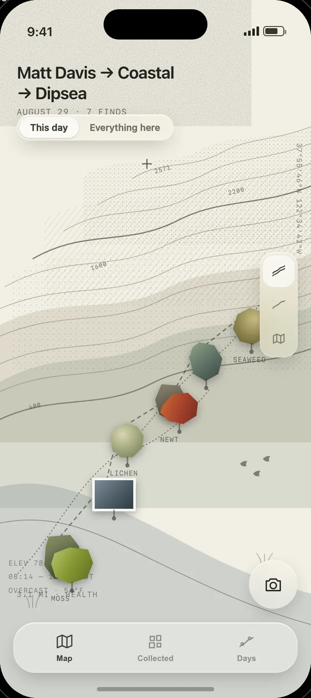

Apps, tools and sound, designed and coded
planetbased.io is a design and creative technology studio run by Ivy Grzybowski, Product Designer & Creative Technologist. Mill Valley, California, working remote.
Desktop App · macOS
Unicorn
A creative OS for designers who work in the terminal. It sits next to Claude Code and keeps a record of what you tried, what shipped and what it sounded like.
Electron · Tone.js · Claude Code
Hover a point to look closer


iOS App · In Progress
Bioindicators
Photograph a lichen or a newt on a walk. The app lifts it out of the photo, pins it to the trail, and tells you what it could indicate about the air and water there.
SwiftUI · Xcode · Liquid Glass


Sound Experience · Web
Living Wall
Planted walls paired with real, credited recordings of the birds that belong there. Hover a name and its song moves around you in stereo.
WebGL · Web Audio · Spatial Sound
 ʻapapane
ʻiʻiwi
ʻamakihi
ʻapapane
ʻiʻiwi
ʻamakihi
What the Studio Does
- Product Design
- Research, flows and interface design for apps and tools, carried through to a working build.
- iOS Apps
- Native SwiftUI with glass controls and one layout that adapts to every screen size.
- Interactive Web
- Studio sites and product pages, from a calm grid to a shader on a wall of plants.
- Sound Design
- Interface sound and real recorded audio, sourced, credited and mixed for the screen.